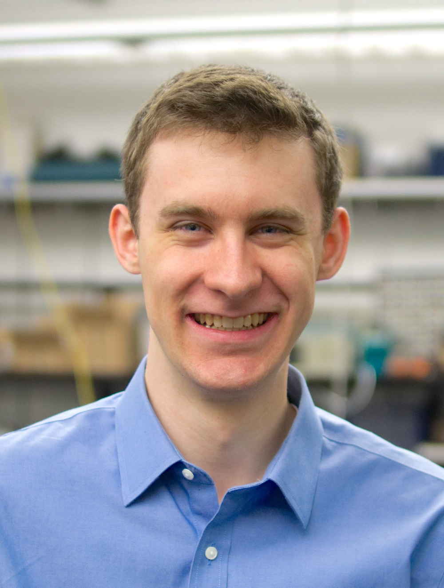
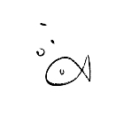

I am an undergraduate student at the University of Washington in Seattle obtaining a double degree in computer engineering and bioengineering. As a member of the UbiComp Lab advised by Dr. Shwetak Patel, my research explores applications of computing tools to improve the quality and accessibility of healthcare. I have worked on smartphone health applications for sleep apnea, blood pressure, and osteoporosis. I am currently devleoping novel sensing systems for continuous, non-invasive blood pressure sensing in collaboration with UW Medicine.
Through research, courses, and independent projects, I have built core skills in signal processing, machine learning, embedded systems, and fabrication. In fall of 2020 I will be applying to computer science PhD programs.
CV psr23@uw.edu linkedin.com/in/parkersruth
